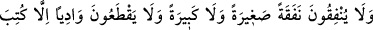
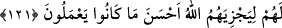

sıkılmasıdır. “Gazap” ise intikam alma arzusudur. Kâşifî der ki: “Kendilerine ulaşan her
fenâlık için sevap kazanırlar. İbn Abbas şöyle der: Düşmandan onların kalbine ulaşan
her korku için yetmiş derece sevap yazılır.” Tefsirlerin ekseriyetinin işaret ettiği şey
budur.
“Çünkü Allah güzel davrananların mükâfâtını zâyi etmez.” Allah, iyi davrananların,
bu iyiliklerine karşılık ecirlerini boşa çıkarmaz. Bu ifade, onlara sâlih bir amel
yazılmasının sebebini bildirmek ve cihadın da iyilik (ihsan) olduğuna dikkat çekmek
içindir. Cihadın kâfirler için ihsan (iyilik) olması ise doktorun deliye vurarak tedavî
uygulaması gibi mümkün olan en nihâî şeyle kâfirleri olgunlaştırma husûsunda bir gayret
olması sebebiyledir.
Sefihlere te’dib etmek fayda verir
Mecnunlar ise sopa ile def edilir
Müminler hakkında ihsan olmasına gelince müminler için cihad, kâfirlerin
hücûmundan ve istîlâsından korunma demektir.
121. Küçük, büyük bir masraf yapmaları, bir vâdiyi geçmeleri, mutlaka onların
lehine yazılır ki Allah onları, yaptıklarının en güzeliyle mükâfatlandırsın.
Allah yolunda cihâd için bir hurma veya bir kamçı sapı ya da bir at nalı ile de olsa
“küçük,” Hz. Osmân ve Abdurrahman b. Avf’ın (r.anhümâ)’nın “zorluk ordusuna”
(Tebük seferine çıkan orduya) yaptıkları infak gibi -ki bu husus bu sûrenin 79. âyetinin
tefsirinde geçmişti- “büyük bir masraf yapmaları,” gerek sefere giderken gerekse
seferden dönerken “bir vâdiyi geçmeleri, mutlaka onların lehine yazılır” yani
yaptıkları bu infak ve vâdi katetme amelleri, amel defterlerine kendi lehlerine olmak
üzere kaydedilir.
“Vâdi”, dağların ve tepelerin (arasında) bulunan ve selin bir tarafından girip öbür
tarafından çıktığı genişçe yer demektir. Daha sonraları mutlak olarak yer için
kullanılması yaygınlaşmıştır.
“ki Allah” bununla “onları, yaptıklarının en güzeliyle mükâfatlandırsın.”
Yenâbi‘de şöyle buyurulmuştur: Meselâ bir gazinin bin tâati olsa ve onlardan birisi
değirlerinden üstün olsa, Hak Teâlâ ona büyük sevap verir. Diğer 999’u onun tufeyli
olarak kabul eder ve O’nun mücâhidlere olan kereminin herkes tarafından bilinmesi için
her birini o sevapla bir tutar.
Cihadda diğer amellerde bulunmayan bir çok fazilet vardır. Cihad Hz. Peygamber
(a.s.)’ın mesleği ve sanatıdır. Ebû Hüreyre (r.a.)’dan şöyle rivâyet edilmiştir: